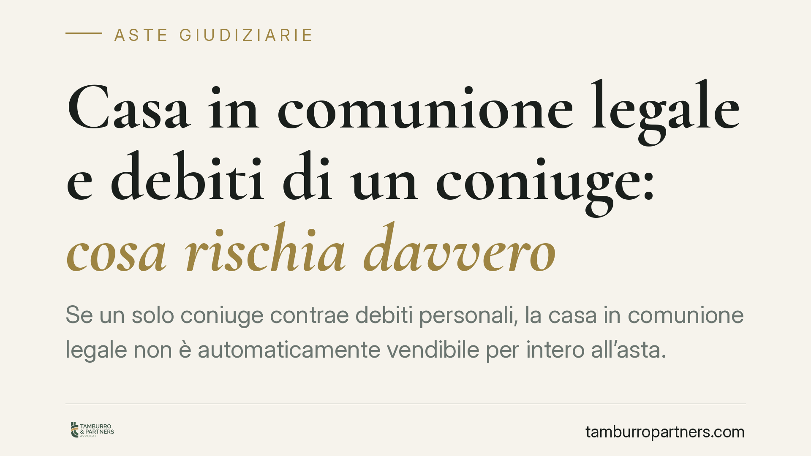

Casa in comunione legale e debiti di un coniuge: cosa rischia davvero
Se un solo coniuge contrae debiti personali, la casa in comunione legale non è automaticamente vendibile per intero all'asta. Il creditore particolare incontra limiti precisi: aggredisce la quota del coniuge obbligato, in via sussidiaria rispetto ai suoi beni personali. Il tema è tecnico e spesso frainteso: chiarirlo evita difese tardive e perdite economiche evitabili.

Il fatto
Un coniuge accumula debiti personali. Il creditore vuole rifarsi sulla casa acquistata durante il matrimonio e caduta in comunione legale dei beni. La domanda ricorrente è: il creditore può vendere all'asta l'intero immobile e poi girare metà del ricavato all'altro coniuge?
La risposta diffusa online è spesso imprecisa. La disciplina della comunione legale non coincide con quella della comunione ordinaria per quote, e questa differenza cambia in modo sostanziale ciò che il creditore può fare.
Inquadramento normativo
Il punto di partenza sono gli artt. 189-191 del Codice civile, che regolano i debiti nella comunione legale.
Quando il debito è personale di un solo coniuge (obbligazione contratta dopo il matrimonio per scopi estranei ai bisogni della famiglia), opera l'art. 189, comma 2, c.c.: il creditore particolare può soddisfarsi sui beni della comunione, ma in via sussidiaria — cioè solo se i beni personali del debitore sono insufficienti — e fino al valore corrispondente alla quota del coniuge obbligato.
Qui sta il nodo. La comunione legale è una comunione senza quote: finché dura, non esistono quote ideali aggredibili come nella comunione ordinaria. Per questo l'art. 191 c.c. prevede che l'espropriazione da parte del creditore particolare rileva ai fini dello scioglimento della comunione limitatamente ai beni interessati. In pratica il pignoramento del creditore particolare determina la conversione della posizione del coniuge debitore in una quota, che è ciò su cui il creditore può soddisfarsi.
È un'area in cui la giurisprudenza si è confrontata a lungo sulla natura della comunione senza quote e sui limiti dell'espropriazione: chi affronta un caso concreto deve verificare l'orientamento aggiornato applicato dal tribunale competente, perché le soluzioni operative non sono uniformi. Restano invece fermi due dati normativi: la sussidiarietà del debito personale e il limite della quota del coniuge obbligato. Non esiste, quindi, una regola semplice per cui "si vende tutto e si dà metà all'altro".
Nel processo esecutivo valgono poi le regole ordinarie: l'art. 567 c.p.c. impone al creditore di depositare la documentazione ipocatastale che ricostruisce la titolarità del bene; l'art. 498 c.p.c. disciplina l'avviso ai creditori iscritti, cioè ai titolari di diritti di prelazione risultanti dai pubblici registri (ipoteche, privilegi), non un generico avviso a chiunque vanti diritti; l'art. 510 c.p.c. regola la distribuzione del ricavato tra gli aventi diritto, ma non è la fonte del diritto economico del coniuge non debitore, che discende dagli artt. 189-191 c.c.
Implicazioni pratiche
Per il coniuge non debitore questo significa che la sua posizione sull'immobile non può essere sacrificata per debiti che non ha contratto oltre il limite della quota altrui. La sua tutela, però, non è automatica: va fatta valere nel processo esecutivo, nei modi e nei tempi previsti.
Per il creditore, la strada verso l'intero immobile non è né automatica né priva di ostacoli: deve dimostrare la sussidiarietà (insufficienza dei beni personali del debitore) e fare i conti con lo scioglimento della comunione.
Il rischio più concreto, in entrambi i casi, è il silenzio processuale: chi non interviene, non contesta la stima o non solleva per tempo le proprie ragioni, si trova vincolato agli esiti dell'esecuzione anche quando la disciplina sostanziale gli dava argomenti. I termini esecutivi sono perentori e non si recuperano.
Cosa fare in concreto
- Recupera subito la documentazione: atto di acquisto, regime patrimoniale (comunione o separazione), visure ipotecarie e catastali aggiornate. Serve per capire cosa è davvero in comunione.
- Verifica la natura del debito: personale del singolo coniuge o contratto nell'interesse della famiglia. Da qui dipende tutto il ragionamento sulla sussidiarietà.
- Muoviti nei termini processuali: appena ricevuto il pignoramento o l'avviso di vendita, consulta un legale. Le tutele del coniuge non debitore vanno attivate subito, non a vendita conclusa.
- Non ignorare le comunicazioni del tribunale: il silenzio nel processo esecutivo produce effetti definitivi.
- Valuta le opzioni con un professionista: opposizioni, interventi, accordi con il creditore o partecipazione all'asta hanno logiche diverse e vanno scelte sul caso concreto.
Disclaimer
Contributo informativo a cura di Tamburro & Partners - Avv. Giuseppe Tamburro. Non costituisce parere legale.
Comprare bene all’asta si può.
Se vuoi acquistare un immobile all’asta in sicurezza o difendere un esecutato, scrivi allo studio. Ti rispondiamo entro un giorno lavorativo.